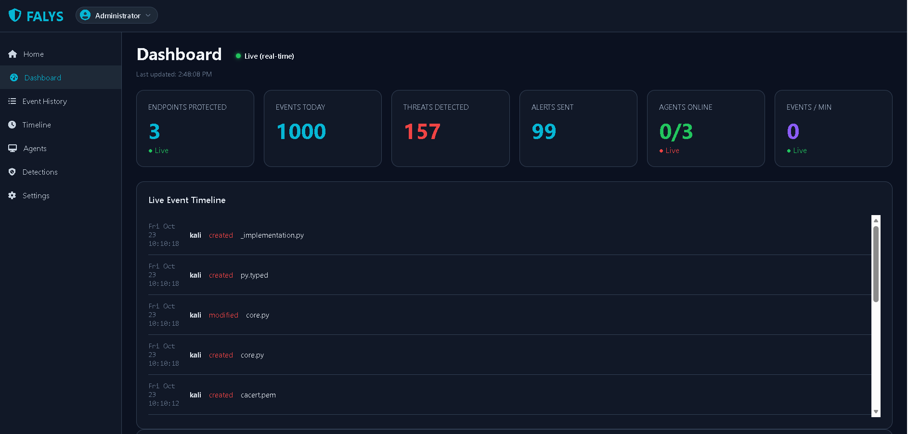

FALYS watches the folders you choose, shows who changed what, scores the risk from 0 to 100, and emails the right person with the reasons in plain English. No log digging.

Swipe to explore · tap to enlarge
A tampered config, a swapped script, a sensitive file touched at 3 a.m. Without file monitoring, you usually find out after the damage is done.
Nobody notices an unexpected change until something breaks, a customer complains, or an auditor asks.
Basic tools say “a file changed”. They don’t say which account made the change, or whether it was meant to happen.
Thousands of raw events with no priority. The one that matters is buried under hundreds that don’t.
FALYS turns that noise into a short list of things worth your attention.
No agents to compile and no dependencies to chase. Server and agents ship as single binaries.
Run FalysServer.exe or falys-server. Secrets and an HTTPS certificate are generated on first run.
Pick Windows or Linux, choose the folder to watch and who gets alerts, then click Generate & Download.
Double-click the agent, or run it on Linux. It installs itself as a service and starts watching.
Every change is scored, classified and logged. The right person gets an email when something looks wrong.
Self-hosted on your servers, or on a VM inside your own AWS, Azure or GCP account.
A short simulation on sample data. No install, no sign-up.
Waiting for events… press “Simulate an attack”.
Real screenshots from the FALYS console. Swipe or tap to look closer.
A rule check, a comparison against that host’s own history, and a look for linked events combine into one score. A burst of changes becomes one incident, not fifty alerts.

Swipe to explore · tap to enlarge
Generate a ready-to-run agent from the dashboard. It arrives pre-configured, with its own API key you can revoke without touching the rest of your fleet.

Swipe to explore · tap to enlarge
Filter by host, file or event type, see the attributed user and alert status, and export the record when someone asks “what happened?”.

Swipe to explore · tap to enlarge
Decide which paths are sensitive, how aggressive detection should be, and when an agent counts as offline.

Swipe to explore · tap to enlarge
The full monitoring core ships with every plan.
Created, modified, deleted and moved files appear as they happen.
A cryptographic fingerprint is stored with every change.
Spot risky permission changes, not just content edits.
See the account behind a change, Verified or Unverified.
Every event scored 0–100 across five clear tiers.
Know how sure FALYS is, based on that host’s history.
Each machine’s own normal, so unusual stands out.
Related events grouped instead of flooding you.
Each agent notifies its own focal person.
Filter, search and export to CSV or JSON.
Tune sensitive paths and thresholds, no code.
Agents queue events and sync when reconnected.
| What you need to know | Basic file logging | FALYS |
|---|---|---|
| A file was changed | Yes | Yes, with hash and permissions |
| Which account changed it | Usually not | OS-level attribution, Verified / Unverified |
| Whether it’s risky | You decide | 0–100 score in five tiers |
| Why it was flagged | No | Readable reasons and confidence |
| If it’s unusual for that machine | No | Per-host behavior baseline |
| If events are related | Manual correlation | Grouped into incidents |
| Telling the right person | Manual | Per-agent email alerts |
Agent-to-server traffic is encrypted out of the box.
Every agent pins the server certificate to resist impersonation.
Revoke one endpoint instantly without touching the rest.
On your servers or your own cloud VM. Your data stays yours.
Hash and permissions recorded for every change, ready for audits.
Single compiled binaries: nothing extra to install on endpoints.
Know when config files or shared folders change unexpectedly.
Start from a ranked, explained list instead of a wall of logs.
Exportable history of who changed what and when.
Start with a few critical machines from $29/mo and grow.
Real-time detection, the five-stage engine and Windows + Linux agents. Higher tiers add scale and enterprise controls.
For small teams securing a handful of critical systems.
For growing teams that need deeper analysis.
For organizations deploying across multiple sites.
Annual billing includes 2 months free. See full pricing details
FALYS is self-hosted. Run the server on your own infrastructure, or on a VM inside your own AWS, Azure or GCP account. You keep control of the data, the network and the secrets.
No. The server and agents ship as single compiled binaries for Windows and Linux, so there is nothing extra to install on the endpoint.
The folders you choose. For every created, modified, deleted or moved file, the agent records a SHA-256 hash and the file’s permissions. Where OS auditing is configured, it also records which account made the change.
HTTPS by default with certificate pinning on every agent. Each agent has its own API key, so one compromised endpoint can be revoked without affecting the others.
Agents queue events while they can’t reach the server and send them when the connection is back. If the server’s IP changes, agents can find it again on the local network.
No, it complements it. Antivirus looks for known malicious software. FALYS answers a different question: which important files changed, who changed them, and does it look normal?
Yes. Administrators can edit detection rules, sensitive paths, engine tuning and alert thresholds from the settings page, with no code changes.
Windows and Linux endpoints. The server also runs on both.
Explore the demo, or talk to us about your setup.
Questions? info@falys.io